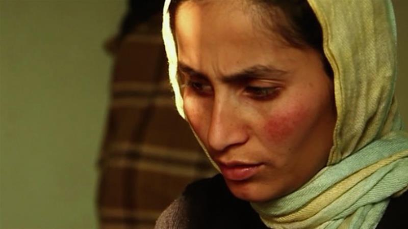

A Thousand Girls Like Me: An Afghan Woman's Fight Against Rape

"Every woman in this country has a hundred owners. It’s always been like that. Fathers, brothers, uncles, neighbours.
They all believe they have the right to speak on our behalf and make decisions for us. That's why our stories are
never heard but buried with us underground." - Mani Mosawi, filmmaker
But what if the stories of Afghan women were heard? What if they succeeded in fighting the cultural,
familial and legal forces that strive to keep them silent? And what if the words they spoke were a demand for justice?
Twenty-three-year-old Khatera finds out when she goes on national television to accuse her father of physically and sexually
abusing
For 13 years, he'd raped her, resulting in numerous pregnancies. Most of them had ended abruptly when he forced her to abort, but two were carried to term.
He took one of the babies into the desert, where he left it to die.
Khatera's three-year-old daughter, Zainab, was spared that fate. But, once again pregnant by her father, she fears for the future of her daughter and unborn child if she cannot persuade the authorities to press charges against him.
It isn't the first time she has tried. The television show is a desperate attempt that she knows could have severe consequences in a country where the judicial system often incriminates the very women seeking its protection.
But being prosecuted for "moral crimes" isn't the only risk she faces in speaking out.
Khatera's uncles believe she has brought shame upon the family and that the solution lies in her death and the death of her daughter.
In the award-winning A Thousand Girls like Me, Afghan filmmaker Mani Mosawi follows Khatera as she lives in hiding, moving from house to house whenever she fears her identity might have been exposed or that her uncles might be closing in on her.
But, despite the fear, the danger and the uncertainty, she is determined to bring her father to justice, to protect herself and her children and to set an example for all other girls like her.
A ZIMBABWEAN
WOMAN WHO DEFIED
THE ODDS IN THE FIGHT
AGAINST SEXUAL ABUSE

In a patriarchal society like Zimbabwe, where poverty and unemployment are very high, it unusual for women to dare raise their voices against sexual abuse or harassment at their workplaces, especially by male bosses, because chances of winning the cases are very slim.
However one woman, Rita Marque-Mbatha, does not regret the day she started what later turned out to be a drawn-out 16-year legal battle for justice after the married woman lost her job in 2003 in the aftermath of raising sexual harassment charges against her boss. Not affording lawyers, she defied the odds by representing herself against some of the country’s fearsome pit-bull lawyers throughout the protracted battle, and still won.
Cyril Zenda interviewed Marque-Mbatha to find out how she could have almost single-handedly won this David-Goliath legal fight.
Fairplanet: On October 30, 2018 you publicly celebrated a Supreme Court judgment in which you won. In short what was the ruling about?
Marque-Mbatha: It was a ruling in which I won the right to claim compensation from my former employer the Confederation of Zimbabwe Industries (CZI). I had issued summons demanding US$500 000 from the CZI. The High Court had ruled that my claim had prescribed and I appealed to the Supreme Court, which ruled in my favour.
The victory has been bitter sweet. I am excited but numb and surreal.
How did it feel when you were winning cases in the High Court and Supreme Court against some of the celebrated legal minds in the country?
It has been a relief because I was fighting powerful opponents who literally destroyed my life and the painful thing is that
despite being violated if I had lost the cases it was mandatory for me to pay the exorbitant legal costs of both respondents. It’s scary and makes you think twice before commencing litigation. Unfortunately, most presiding officers in the lower courts tend to treat self-represented litigants as second-class citizens. It is common cause that if the other party is legally represented, although your case is strong, a technicality will be used to dismiss the case with costs in order to discourage self-representation and access to justice.
What motivated you to go into this David-Goliath legal fight, considering that you were taking on a big organisation (and individual)
with more resources than you?
Ironically prior to the violation at the workplace I have always been passionate about getting justice for women and children who have been abused. The sexual harassment that I suffered fuelled my passion
to get justice for the vulnerable people in the society.
In a patriarchal society like Zimbabwe, it is not easy for women, married ones for that matter, to raise charges of sexual harassment, more so against a male boss and also considering how desperate many people are for jobs.
How did you overcome discouragement that comes from such factors?
Sadly, it is considered disgraceful for one to allege that they have been raped or sexually harassed. Retaliation abounds.
What message do you have for women who find themselves in the situation that you were when you
lost your job after the sexual harassment?
Women should speak out against the abuse, abusers thrive on silence.
Because of her passionate involvement in women’s rights issues, Rita Marque Mbatha is now Regional Vice President (Africa Anglophone) of the International Alliance of Women and the International Alliance Representative at the African Union.
Sandra Bundy, Story Of First Woman To Win Suit Against Sexual Harassment In Workplace, Gets Feature Treatment

EXCLUSIVE: One of the most compelling stories to come out about women’s rights in the workplace is being developed as a feature film, Silence Breaker: The Sandra Bundy Story, thanks to Adaptive Studios and EnLight Productions. In the 1970s, Bundy fought through the courts to stop sexual harassment after being berated about her sexual inclinations by her boss and co-workers at the D.C. Department of Corrections. When she reached a breaking point and confronted the inappropriate, sexually explicit comments and propositions, she was met with the comment:
“Any man in his right mind would want to rape you.”
Adaptive Studios, an entertainment studio recently backed by AMC Networks, is doing the project in partnership with EnLight, a media company dedicated to empowering programming.
“Given the spotlight on the #MeToo movement and recent truths about present day sexual harassment in the workplace, it’s important that stories such as Sandra Bundy’s are told and shared with the world,” said Adaptive Studios’ VP Alternative Programming Courtney Parker.
“This case, which is so relevant given the current atmosphere, influences court decisions and proceedings still happening today.”
The film will highlight Bundy’s historical court case, Bundy v. Jackson, which determined that sexual harassment in the workplace violated the civil rights act of 1964 and categorized sexual harassment as employment discrimination. Her court case set the precedent for
all subsequent civil rights and equality cases dealing with sexual misconduct at work.